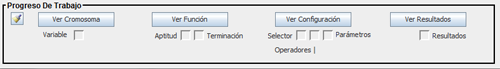
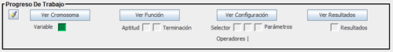
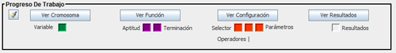

El progreso de trabajo permite observar el progreso a medida que se va desarrollando el algoritmo genético en la aplicación.
Al iniciar la aplicación, el progreso no mostrará avance como se muestra en la imagen:
Pero si por ejemplo se define el cromosoma, cambiará de color la casilla relacionada a dicho progreso:
Si realiza todas las configuraciones correctamente, el progreso debería verse así:
Nota. La terminación no es obligatoria que esté activada para poder ejecutar el Algoritmo Genético.
El progreso de trabajo incluye unos botones con los cuales podrá visualizar más no editar las configuraciones que ya fueron realizadas. Además, el progreso de trabajo cuenta con un botón con el cual podrá limpiar toda la configuración.